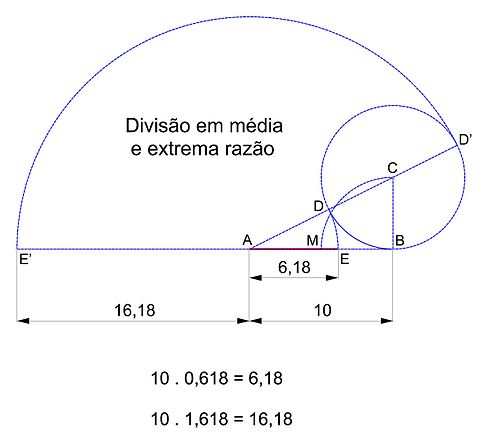
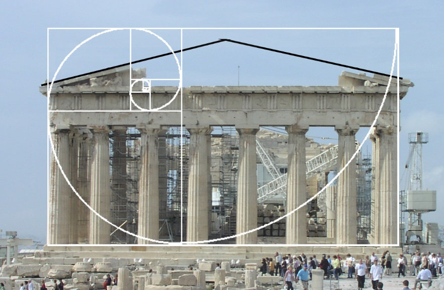
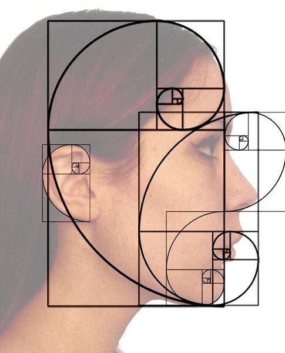
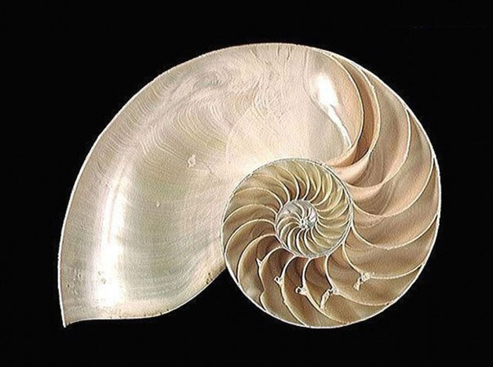
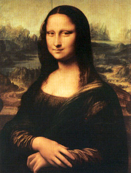
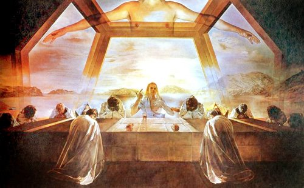

O que é a Proporção Áurea?
Proporção áurea, número de ouro, número áureo, secção áurea, proporção de ouro é uma constante real algébrica irracional denotada pela letra grega \phi, em homenagem ao escultor Phideas, que a teria utilizado para conceber o Parthenon, e com valor arredondado a três casas decimais de 1,618.

Voltar para o topo da página
Sua importância em nossa vida.
A famosa sequência de Fibonacci está ligada diretamente à proporção áurea. A proporção áurea é considerada uma espiral perfeita, tão agradável aos olhos que passou a ser utilizada na arte, no design e na arquitetura. A proporção áurea também pode ser encontrada na natureza e até no corpo humano.

Voltar para o topo da página
Obras que possuem a Proporção Áurea.
Monalisa - Leonardo da Vinci
Mona Lisa também conhecida como A Gioconda ou ainda Mona Lisa del Giocondo é a mais notável e conhecida obra de Leonardo da Vinci, um dos mais eminentes homens do Renascimento italiano. Sua pintura foi iniciada em 1503 e é nesta obra que o artista melhor concebeu a técnica do sfumato.
A Última Ceia - Salvador Dali
A Última Ceia é uma obra realizada por Salvador Dalí de 1955. A pintura é óleo sobre tela e mede 167 cm de altura e 268 de largura.
Voltar para o topo da página